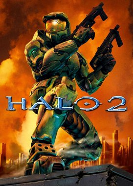

Halo 2 does not pick up directly after the events of its predecessor, but rather, after the events depicted in the novel Halo: First Strike, taking place in Halo: Combat Evolved with the events explaining Master Chief's return to Earth not featured in any game so far. The story dives deeper into the society of the Covenant, their goals, beliefs, and alliances, as well as continuing Master Chief's story to put an end to the Covenant threat on Earth as well as another Halo ring known as Delta Halo. Halo 2 also introduces the Brutes, who were first mentioned in First Strike. They are shown as large, hairy, ape-like beasts; although they do not have energy shields like the Elites, their immense bulk and strength allows them to absorb a large amount of damage before dying. The game follows a linear series of episodes that differ from Halo: Combat Evolved. The player will play as both the Master Chief and a troubled Covenant Elite known as "the Arbiter".
 About the developer